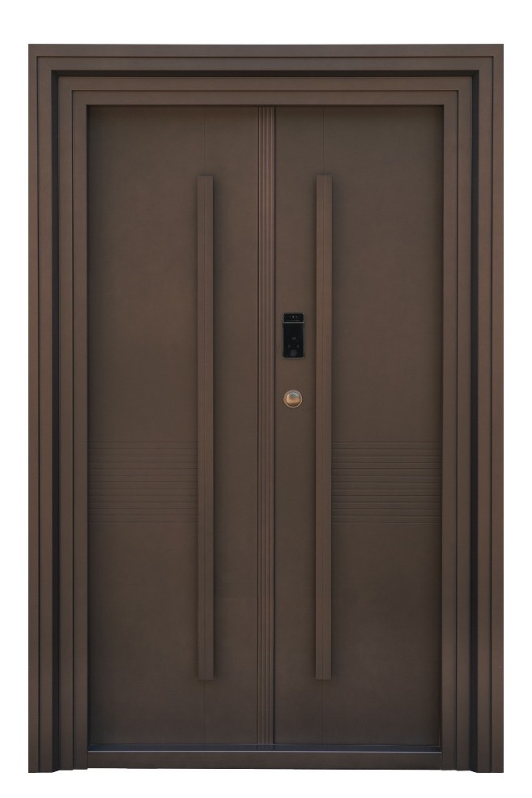
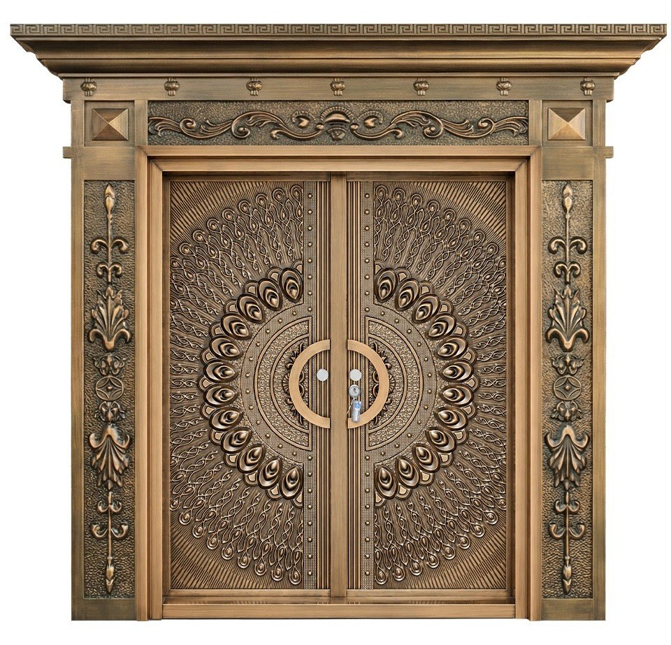
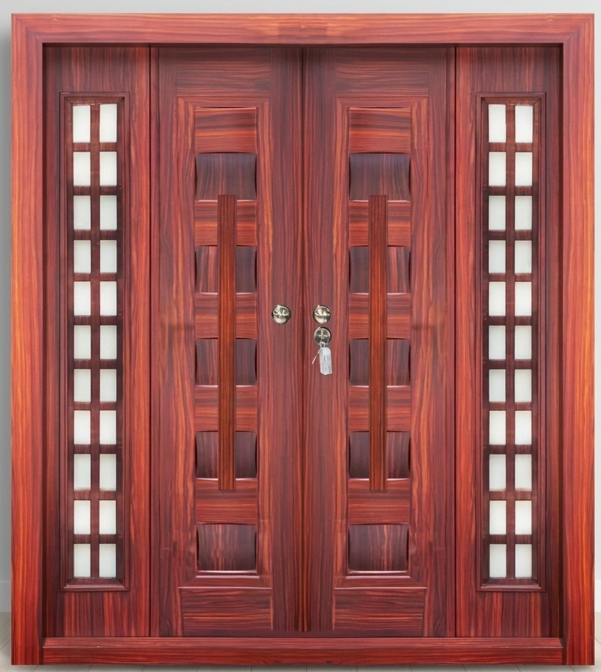
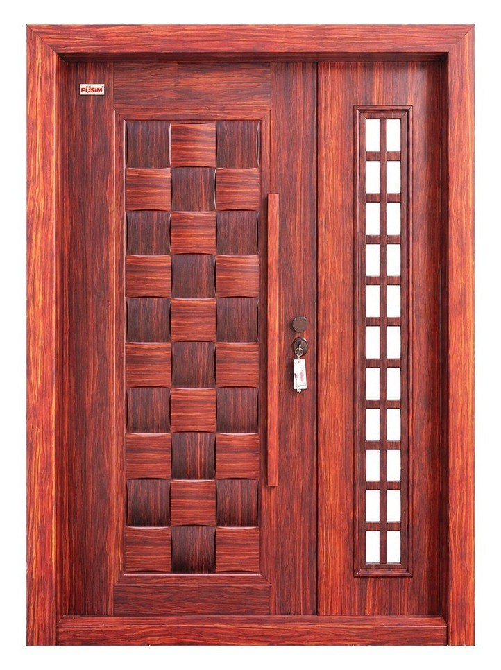
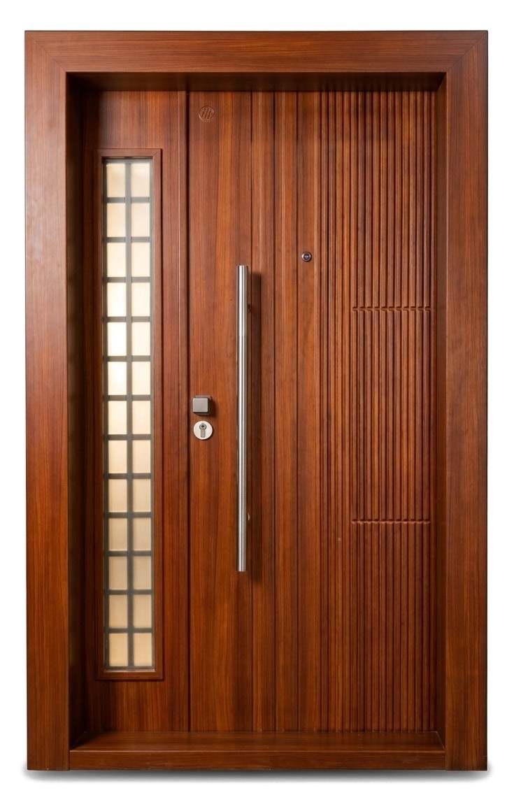
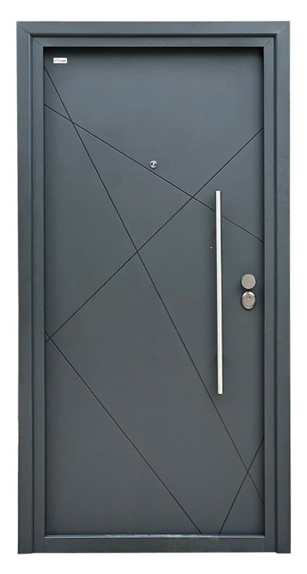
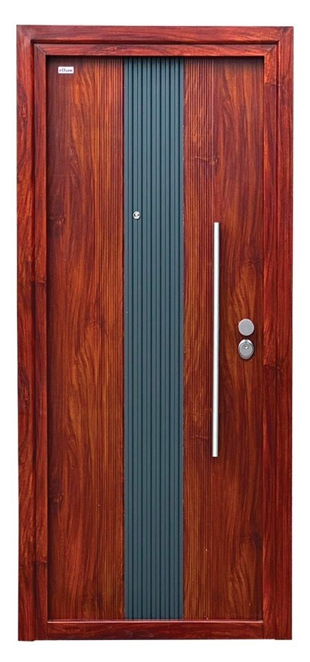

Steel doors for main entrances and bedrooms
Luxury and standard main doors, and exit and bedroom doors, imported and powder coated, with a 5-year warranty. Supplied from our showroom in Thengapattanam across Kanyakumari district.
- 5 yearsstandard warranty
- 88 to 180 cmdoor widths in the premium imported range
- 205 and 235 cmusual door heights
- Powder coatedall imported steel doors
What we supply
Luxury main doors
Main doors with a sill, usually from 3.5 ft width. A digital lock is built in on some models.
Standard main doors
Main entrance doors, including mother and son and double doors, some with side windows. Usually in a 22.5 cm frame.
Exit and bedroom doors
Standard doors with a 10 or 12 cm frame, usually used as exit and bedroom doors, though they can serve as main doors too. Bedroom doors come without a sill.
Made-to-size steel doors
If your opening is an unusual size and you still want a massive steel door, we can fabricate premium steel doors to your size, with powder coating.
Designs
A few of our steel doors. We add more regularly. Every design comes in several widths, and the frame thickness changes with the width. Tap “Ask about this door” for details and a quote on WhatsApp.
Luxury main doors
Main doors with a sill, usually from 3.5 ft width. A digital lock is built in on some models.

Modern door with digital lock
Clean modern design with a digital lock built in.
Ask about this door
Grand entrance with pillars
Relief pattern door with decorative pillars and a lintel, in a bronze finish.
Ask about this doorStandard main doors
Main entrance doors, usually in a 22.5 cm frame.

Main door with side windows
Double main door with two tall side windows, in a rosewood finish.
Ask about this door
Main door with a side window
A raised block pattern with a long bar handle and a tall side window, in a rosewood finish.
Ask about this door
Mother and son main door
A wide leaf and a narrow leaf, with a side window and a long bar handle.
Ask about this door
Modern grey main door
Fine geometric lines and a long bar handle on a matt grey door.
Ask about this doorExit and bedroom doors
Doors with a 10 or 12 cm frame, usually used as exit and bedroom doors. They can also serve as main doors. Bedroom doors come without a sill.

Wood and grey strip door
Wood-grain finish with a grey fluted strip and a bar handle.
Ask about this doorImages are for illustration. Finish and details may vary slightly.
Sizes and specifications
Premium imported steel doors.
| Widths | 88, 98, 108, 120, 150 or 180 cm |
| Heights | Usually 205 cm or 235 cm |
| Smaller sizes | Narrower widths and lower heights, starting from 195 cm, can be supplied when necessary |
| Luxury doors | Main doors with a sill, usually from 3.5 ft width |
| Exit and bedroom doors | Standard doors with a 10 or 12 cm frame. Bedroom doors come without a sill |
| Frame thickness | Changes with the door width. For example, a 3 ft door usually has a 12 cm frame and suits an exit door, while the same design in 4 ft usually has a 22.5 cm frame and serves as a main door |
| Finish | All imported steel doors are powder coated |
| Construction | Internal honeycomb-type filling, not a single sheet of exposed steel |
| Locks and hardware | Standard for each door. Some handles are offered as optional accessories |
| Digital lock | Available as an option, and built in on some models, usually luxury |
| Warranty | 5 years, standard |
| Installation | Can be coordinated by RIDGE for doors supplied through us |
Colours, finishes and designs depend on the door range. Ask us to compare the standard and luxury categories for your opening.
Steel or wood?
See what each door really costs over ten years, including polishing, termite treatment and repainting.
Open the cost comparisonSteel door questions
Straight answers on coastal conditions, rust, bedrooms, AC rooms, installation and more.
Are steel doors suitable for homes in coastal areas like Kanyakumari?
Yes, steel doors can be used in coastal and high-humidity areas like Kanyakumari, Kaliyakkavilai, Marthandam and Colachel — but the construction and protective finish matter. Coastal air contains salt and moisture, which can accelerate corrosion, so the door should have appropriate surface protection for its location. Ridge can recommend the right configuration based on your actual site conditions.
Will steel doors rust?
A properly finished and maintained steel door from a quality manufacturer significantly reduces corrosion risk. At Ridge, we recommend and supply doors with appropriate surface protection for coastal conditions — and we guide customers on the right specification for their specific location and exposure. Key factors include the steel substrate, surface preparation, coating, edges, welds, hardware and installation.
Are steel doors suitable for bedrooms?
Yes. Steel doors are commonly used for bedrooms as well as main entrances and other areas of a home. The important considerations are the door's core, construction, sealing, hardware and overall installation. A properly selected steel door provides durability and security without making a bedroom unsuitable for normal residential use.
Do steel doors make an AC room hotter or consume more AC?
The steel material itself does not mean that an air-conditioned room will automatically lose cooling. A door's thermal performance depends on the door construction, core filling, air leakage around the frame and how well the opening is sealed. Ridge doors with an internal honeycomb-type filling are not simply a single sheet of exposed steel. Proper installation and sealing around the frame are also important for AC rooms.
Are steel doors stronger than wooden doors?
Steel generally provides a strong and durable door construction, but the complete door system matters — including the steel, frame, internal construction, hinges, locks and installation. Wood also has different grades and constructions, so comparing only the surface material can be misleading. The better comparison is between the complete specifications of the two doors.
What is the advantage of a steel door over a wooden door?
Homeowners generally choose steel doors for a combination of durability, dimensional stability, security and lower susceptibility to problems such as termite damage and moisture-related swelling or warping — all especially relevant in Kerala border and coastal Tamil Nadu conditions. The right choice still depends on where the door will be used, the design required and your budget.
Can steel doors be customised to my required size?
Many steel door systems can accommodate different sizes, but the available size range depends on the particular door design and manufacturer. Before ordering, Ridge checks the opening size and required door configuration so that the correct door size and installation details can be planned.
Can I choose different colours and designs?
Yes. The available colours, surface finishes and design options depend on the particular door range. Ridge offers different styles so that customers can select a door based on the architecture of the house, entrance design and budget, rather than being restricted to one standard appearance.
Do you provide installation?
Yes. Ridge can coordinate installation for doors supplied through us. Proper installation is important because even a good-quality door can perform poorly if the frame is not correctly positioned, aligned, anchored and sealed.
Do steel doors require maintenance?
Yes, like any exterior building product, steel doors benefit from periodic inspection and basic maintenance. Keep the surface clean, especially where the door is exposed to coastal salt or rain, and attend to scratches, coating damage or loose hardware before they become larger problems. Coastal environments like Kanyakumari deserve particular attention because salt exposure can accelerate corrosion.
Can I replace an existing wooden door with a steel door?
In many cases, yes. However, the existing opening should be inspected before finalising the door. The frame condition, opening dimensions, wall construction, threshold and installation method all need to be considered. For renovation projects, Ridge can assess the opening and recommend the appropriate approach.
What brands of steel doors do you stock?
RIDGE is your solution provider for steel doors. We supply premium imported doors from leading brands, including Fusim and Hawaii, and other brands to suit your requirement and budget. Visit our Thengapattanam showroom to see the range.
What is the price range of steel doors in Kanyakumari?
Steel door prices vary with the type of door (for example imported or regular steel), size, design, brand and hardware. We give a detailed quotation for your exact requirement. Call us on 90800 19508 or send your door size on WhatsApp.
Do you supply doors outside Thengapattanam?
Yes. Ridge serves customers across Kanyakumari district — including Nagercoil, Marthandam, Colachel, Kaliyakkavilai, Thuckalay, Kulasekaram, Padmanabhapuram, Boothapandi, Kuzhithurai, Nithravilai, Enayam and surrounding areas. Contact us to discuss supply and installation arrangements for your location.
Get a steel door quote
Send the width and height of your opening, and whether it is a main door or a bedroom door.
Chat on WhatsApp